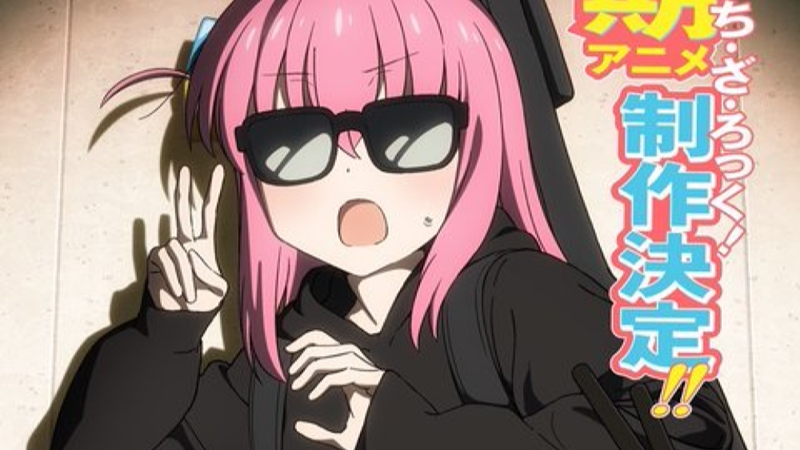

Bocchi The Rock!
2º filme de recapitulação de BOCCHI THE ROCK! ganha novo trailer
O anime é uma adaptação do web novel sul-coreano de Chugong. A trama acompanha a jornada do guerreiro Jin-woo. Na obra, há mais de uma década, apareceu um portal misterioso que conectava este mundo a uma dimensão diferente, fazendo com que as pessoas despertassem poderes únicos. Esses indivíduos são chamados de “caçadores”. Os caçadores usam seus poderes sobre-humanos para conquistar masmorras de portais e ganhar a vida. Sung Jin-woo, um caçador de baixo nível, é considerado o caçador mais fraco de toda a humanidade. Um dia, ele se depara com uma “masmorra dupla”, que tem uma masmorra de alto nível escondida em uma masmorra de baixo nível. Diante de Jin-woo gravemente ferido, surge uma missão misteriosa! À beira da morte, Jin-woo decide aceitar esta missão, tornando-se assim a única pessoa capaz de subir de nível! Solo Leveling: Arise from the Shadow estreou em 4 de janeiro de 2025 exclusivamente na Crunchyroll.
2º filme de recapitulação de BOCCHI THE ROCK! ganha novo trailer
Bartender Glass of God divulga novo trailer e confirma data de estreia

Demon Slayer ganhará uma versão especial do Arco Distrito da Luz Vermelha no Japão